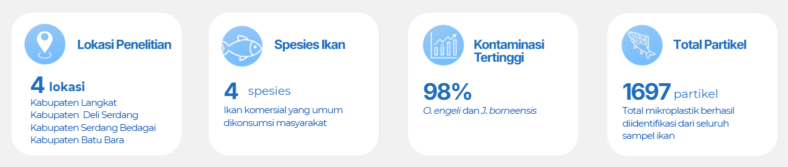
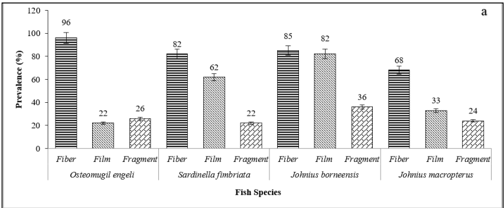
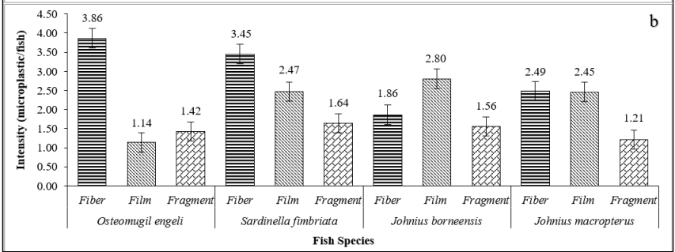

Kontaminasi Mikroplastik pada Ikan Konsumsi Komersial di Pesisir Timur Sumatera Utara
Highlight Penelitian
Penelitian ini mengidentifikasi kontaminasi mikroplastik pada empat spesies ikan konsumsi penting di pesisir timur Sumatera Utara. Ukuran partikel mikroplastik paling banyak berada pada kisaran 105–500 μm, sedangkan jenis mikroplastik yang paling sering ditemukan adalah film dan fiber. Temuan ini menunjukkan bahwa ikan konsumsi dapat menjadi jalur masuk mikroplastik ke dalam rantai makanan manusia.

Hasil & Visualisasi Data

(a) Persentase mikroplastik berdasarkan spesies ikan dan jenis mikroplastik di organ usus.

(b) Intensitas mikroplastik berdasarkan spesies ikan dan jenis mikroplastik di organ usus.